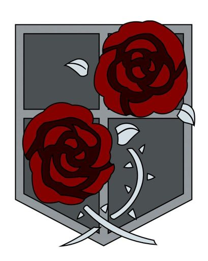

ИсторияТоп самых популярных персонажейИстория создания образа титановМангаПервый титанВооружённый силыРост титанов |
ГарнизонГарнизон (駐屯兵団 Chūton Heidan) – наиболее многочисленный, но при этом и наименее квалифицированный (за исключением элитных отрядов) род войск. В связи с высоким уровнем смертности Разведкорпуса и высоким конкурсом набора в Военную полицию, люди чаще всего предпочитают именно его.  Основной задачей является защита Стен при нападении Гигантов и последующая эвакуация гражданского населения. Второстепенные: организация порядка, патрулирование, ремонт оборонительных сооружений. В битве за Трост, бойцы Гарнизона не только защищают стены, но и самостоятельно зачищают захваченные районы. Именно они, вместе с курсантами участвовали в обороне Троста, лишь потом город зачистил Разведкорпус. <на главную |